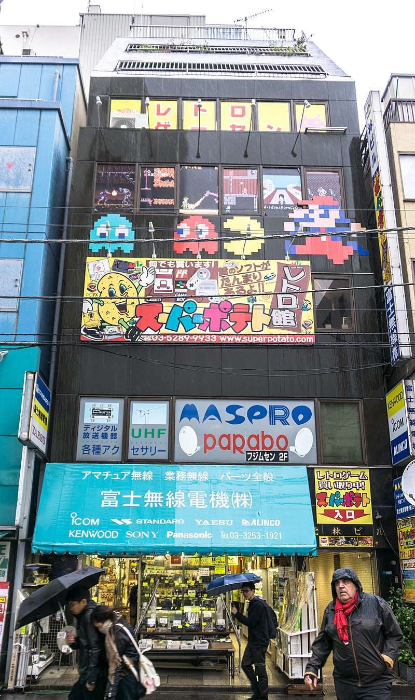
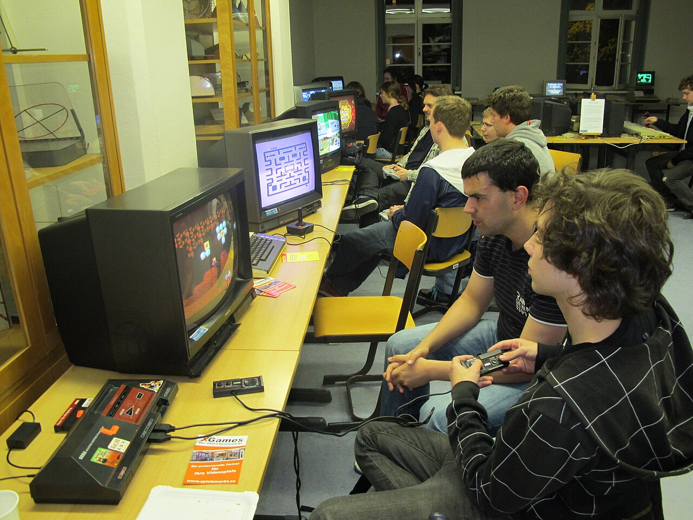

Retro videojátékok
A retro játék, más néven klasszikus vagy "old school" játék, olyan számítógépek, konzolok és videojátékok használatát és gyűjtését jelenti, amelyek korábbi évtizedekből származnak. A retro játék általában elavult vagy már nem gyártott rendszerekre épül, bár a portolt retro játékok lehetővé teszik, hogy ezeket modern hardveren is lehessen játszani portolások, emulációk vagy gyűjtemények révén. A retro játék célja többnyire a nosztalgia, a megőrzés vagy az autentikusság. Egy új játék is lehet retro stílusú, például egy körökre osztott harcrendszerrel rendelkező RPG izometrikus nézetben, pixel art grafikával és chip-tune stílusú zenével. A retro játék a videojáték-ipar korai évei óta létezik, és az internet, valamint az emulációs technológia elterjedésével vált igazán népszerűvé. Gyakran említett okok, amiért a játékosokat vonzzák a retro játékok: a nosztalgia különböző korszakok iránt, az a vélekedés, hogy a régi játékok innovatívabbak és eredetibbek voltak, valamint a játékok egyszerűsége. A retro játékokat és a retro számítástechnikát gyakran a megőrzés egy formájaként és a remix kultúra részeként írják le.

Játékok
A retro és a modern játékok közötti különbségtétel erősen vitatott, de általában három fő szempont mentén határozzák meg: az egyik szerint a 2D-ről 3D-re való áttérés jelenti a határt (ez esetben a negyedik generáció az utolsó retro, az ötödik pedig az első modern generáció); egy másik nézőpont a 2000-es évek elejét és az online játékok elterjedését tekinti vízválasztónak (így az ötödik a retro, a hatodik pedig a modern korszak kezdete); míg a harmadik megközelítés az analóg audiovizuális kimenetről digitálisra való áttérést, valamint a 4:3 képarányról 16:9-re való váltást veszi alapul (ez alapján a hatodik a retro korszak vége, a hetedik pedig a modern kezdete). A játékokat eredeti hardveren vagy modern emulációval is lehet játszani.A retro játékokra fókuszáló televíziós műsor, a GameCenter CX szerint egy konzolnak legalább 20 évesnek kell lennie ahhoz, hogy bekerüljön a retro játékos kihívások közé.

Történelem
Az 1990-es évek elején és közepén egyre növekvő rajongótábor alakult ki a régebbi videojátékok körül, elsősorban olyan saját kiadású fanzinokon keresztül, mint Tim Duarte 2600 Connection-je, Joe Santulli Digital Press-e vagy Frank Polosky Video Magic-je. 1997-ben Ralph Barbagallo, a Digital Diner magazin munkatársa kijelentette, hogy a régi videojátékok iránti kortárs érdeklődés az internet térhódításával erősödött fel, különösen az olyan Usenet fórumokon keresztül, mint a rec.games.video.classic, illetve egy dedikált IRC csatornán. Ezekből a közösségekből többen saját weboldalt is indítottak – köztük Greg Chance, akinek The History of Home Video Games Homepage című oldala népszerűvé vált. Az 1990-es évek közepéig a régi játékokat csak alkalomszerűen adták ki újra néhány konzolra. Barbagallo összefoglalása szerint „egy ideig úgy tűnt, a játékipar egyáltalán nem emlékezett az 1985 előtti évekre”. 1995-ben a Next Generation magazin már kiemelte, hogy újraéledtek a hosszú ideje szunnyadó játéksorozatok: az Activision például kiadta a Return to Zork (1993) és Pitfall: The Mayan Adventure (1994) című játékokat, az Atari a Tempest 2000-at (1994), míg a Nintendo a Donkey Kong Country-t (1994) és a klasszikus Donkey Kong-ot (1994). E megnövekedett érdeklődés hatására a cégek elkezdték kereskedelmi forgalomban is újra kiadni korábbi játékaikat gyűjteményes formában, például a Microsoft Arcade-ot (1993) Windowsra, valamint 1995-ben az Atari 2600 Action Pack sorozat első részeit számítógépre, és a Namco Museum sorozatot a PlayStationre. A rajongók is elkezdtek önálló kiadásokat fejleszteni – például a Stella Gets a New Brain, amely az Atari 2600-hoz készült, kazettás játékok újrakiadása volt CD-n. Új játékok is megjelentek régi rendszerekre, például Ed Federmeyer EdTris 2600-ja (1995), ami a Tetris Atari 2600-as változata volt. Barbagallo szerint a videojáték-emulátorok is egyre népszerűbbé váltak, mivel a személyi számítógépek már elég erősek voltak ahhoz, hogy szimulálni tudják olyan rendszerek hardverét, mint a ColecoVision, a Nintendo Entertainment System, a Game Boy, valamint olyan számítógépekét, mint az MSX vagy a Commodore 64.

A retro játék különböző módjai
A nosztalgia erősödésével és a retro játékgyűjtemények sikerével az ötödik, hatodik és hetedik konzolgeneráció során a retro játék a modern videojátékokban is visszatérő motívummá vált. A modern retro játékok szándékosan korlátozzák a színpalettát, a felbontást és a memóriahasználatot – jóval az adott hardver valódi kapacitása alatt –, hogy a régi rendszerek megjelenését és technikai korlátait utánozzák. Ezek a játékok lehetnek általánosan retro hangulatúak, mint például a Cave Story, vagy konkrét hardvereket próbálhatnak megidézni, mint a La-Mulana, amely az MSX színpalettáját használja. Ezt a jelenséget szándékos retro (deliberate retro) és NosCon néven is ismerik. A fogalom különösen a független játékkészítő közösség körében vált népszerűvé, ahol a rövid fejlesztési idő előnyt jelentett, és a kereskedelmi siker nem mindig volt elsődleges szempont. A nagyobb kiadók is felfigyeltek a modern retro játékokra, és maguk is készítettek ilyeneket: például a Mega Man 9, amely az NES hardverét utánozza; a Retro Game Challenge, amely új játékokat kínál egy „ál-NES” platformon; vagy a Sega Fantasy Zone II újrakiadása, amely emulált System 16 hardveren fut PlayStation 2-n, így egy 8-bites játék 16-bites újragondolása jött létre – sőt, ebből a verzióból korlátozott példányszámú árkádgépes változat is készült.